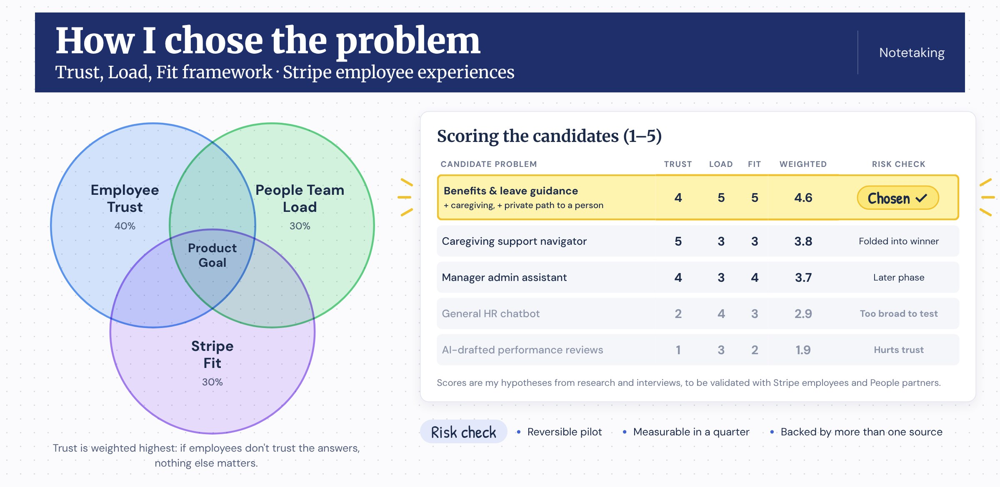

Video of me walking through this case study with live voiceover. Opens in Loom.
Note: This is an outside case study. Built from public research about Stripe.
01My understanding of Stripe's Employee Experiences team
This team builds internal products for Stripe's own employees, managers, and People professionals. The goal is to make routine questions and tasks self-service, while making sure anything that needs judgment or care reaches the right person with the right context.
Based on Stripe's public job postings, People information lives across a few separate places: Workday for employee records, an internal wiki for policies, and a ticketing system for HR questions. This case study focuses on the moment an employee has a benefits or leave question and has to figure out where to go.
02Why I started here
I started my career in technical recruiting at Google and Codecademy, so I've been on the People side of these questions. Later I built The Dev Difference, an AI interviewer, where trust and human decisions were central to the product. This role sits right where those two experiences meet.
In building the previous AI tool, the constraint I learned to keep in mind with AI is trust and quality over speed. Security, legal, and Employee Relations rightly move carefully with employee data, so anything I proposed had to earn trust first and scale second.
03Research signals
I combined public research, 4 real interviews, and 11 simulated personas. For the interviews, I talked with people working within a system or company of 500+ employees that has an HR department, using a short guide I could run in about 10 minutes.

The real interviews made the problems concrete. One person spent a week going from her VP to HR to another team to get her bonus explained. Another wanted her medical details seen only by whoever needs them. A software engineer at a global tech company emailed an HR alias about taxes after moving back from the UK, got redirected, and waited days for a full answer. She also found out late about legal and discount benefits she already had. On anything sensitive, one was blunt:
“Even if you say it’s private, it’s not private.”
All four drew the same line for AI: facts and simple lookups are fine, but a person should handle anything specific to their situation.
I sorted every signal on sticky notes until patterns appeared. Three kinds of people emerged, each stuck on a different problem: finding an answer they trust, reaching the right person, or feeling safe enough to ask. With only four real interviews, I treat the simulated findings as directional.

That led me to one problem: Employees can't easily get trustworthy answers to benefits and leave questions, or privately reach the right person when the topic is sensitive.
04Creating a framework to narrow solutions
With the problem clear, I scored five possible solutions on three lenses: employee trust, People team workload, and fit with Stripe's goals. Trust gets the most weight, because if employees don't trust the answers, nothing else matters. Every candidate also had to pass a risk check: a reversible pilot, measurable within a quarter, and backed by more than one source.

The rejected options mattered as much as the winner. A general HR chatbot was too broad to test well, and AI-drafted performance reviews would save time but hurt trust.
That pointed to one clear direction: a benefits and leave assistant for routine questions, with a direct line to a People lead for anything sensitive.
05What I got wrong at first
I assumed privacy only mattered for the most serious cases, like reporting harassment. The research suggested it's much broader. People held back on asking about an internal move, a pregnancy they hadn't announced, or medical leave, because they didn't know who would see the question.
My interview in Germany added a second lesson:
Interviews revealed that in private situations, employees may distrust not just AI but any written communication.
So I stopped treating privacy as an edge case and started treating it as a reason people never ask at all. That changed the product from "a better answer engine" to "a place people feel safe asking."
I also guessed that written records would feel protective to managers and risky to employees. The interviews didn't support that. The claims specialist, an individual contributor, feels protected by records because she trusts the rules. What mattered was trust, not role.
06The direction I chose
I combined two ideas: a chat resource with policy access for quick questions, and private, direct conversations with team experts for anything sensitive.

07How much the AI decides
The core product question is how much the AI should do on its own. I placed each type of request on a level, based on how sensitive it is and whether it can be undone:
At Level 5, the product should be honest about what happens next. Once HR knows about some issues, the company may be required to act, so it shouldn't promise more confidentiality than it can keep. Legal and Employee Relations would own that wording.
Privacy also showed up as two different needs. Some people trust HR but want sensitive details limited to whoever needs them, which calls for role-based access: employees, managers, and People partners each see only what their role requires. Others distrust HR itself, which a direct line to a People lead doesn't fully solve, so I'd test whether an option outside the usual HR route is needed. Managers, on the other hand, get a clear record of what they asked and what HR said.
08Mocking it up
Using the resources I had, I worked with Claude and a public example of Stripe's product style to create the look and layout of a first screen. Then I let my interviews decide what the screen actually shows and includes.

As I designed, I kept pulling the product back toward how people already get help:
- Calendar, policies, and pay stay one click away. The claims specialist likes to look things up herself instead of asking AI every time. Pay is a link for now; explaining pay and bonuses is a later phase.
- I dropped a request form I'd started. People already email or call when something is private, so the screen simply shows who to contact and when to expect a reply.
- The AI explains the policy; a person confirms. The answer says what the policy allows instead of telling someone they're eligible.
09Testing the AI before launch
Testing this well could be its own case study. Before anyone relies on the assistant, I would want to be sure it is:
- Tuned to each country's policies. Leave and benefits rules change by where someone works, so each country gets its own set of test questions.
- Tuned to Stripe's own policies. Answers come from Stripe's approved policies and the employee's eligibility, such as role, level, and time at the company, not general HR information.
- Current. Answers come only from up-to-date sources, and the test set runs again every time a policy changes.
- Honest about its limits. When it isn't confident, or a question is sensitive, it hands off to a person instead of guessing.
- Respectful of permissions. It never shows one person's information to someone who shouldn't see it.
- Checked by people. Nothing launches until it passes the test set, and People partners review a sample of answers every week after launch.
10A realistic 6-month roadmap
Months 1–2: validate the problem and set the scope. I would interview employees and People partners, map today's internal tools, and agree on boundaries with engineering, security, legal, and People leadership. We would then build a test set of real benefits and leave questions, by country, with correct answers.
Months 3–4: build and test the AI. We would build policy chat for benefits and leave in one country, and show each employee their People lead's contact details. We would test answers against the question set and with People partners until they're consistently right, then get sign-off from security, legal, and People teams.
Months 5–6: pilot and refine. We would launch to a small group, review answers and feedback weekly, and decide whether to expand to more teams and countries. Pay explanations and a manager view would come later.
11Outcomes I would measure
Additional metrics and supporting signals:
- First-time askers: employees who rarely spoke to HR before and now use the chat or reach out to their People lead. This is the clearest sign we created a safe place to get information.
- HR tickets decreasing, and which topics they're about
- Chat usage over time
- How often people ask the chat for things they could easily look up, like their time off balance, so we can point them to the page instead and keep costs down
12What I'd do with more information
With more information, I would:
- Understand Stripe's current internal tooling and how employees use it today.
- Interview employees internally about what works and what doesn't, and get clear boundaries from engineering teams.
- Make sure this doesn't overlap with other products. If Stripe already has a pay tool, I wouldn't add pay here. I'd point people to that tool instead.
This case study is an example of how I'd approach the work on the Employee Experiences team: start with real people, be clear about what AI should and shouldn't do, and earn trust before scaling. I'd expect some of my assumptions to be wrong, and I'd want to find out early. I'd love to talk more about my background in recruiting and AI products, and why this work matters to me.
Thanks for reading!
Sources: SHRM Top 5 Workplace Issues for 2026 · Workday, AI at work survey · Applaud, 2026 State of HR Service · Gartner on manager workloads · Korn Ferry Workforce 2026 · Stripe public job postings